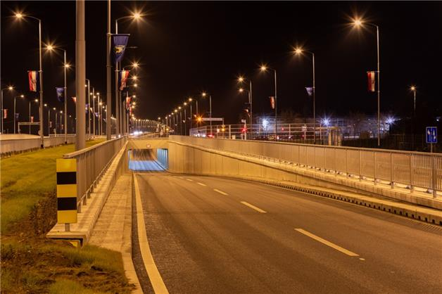
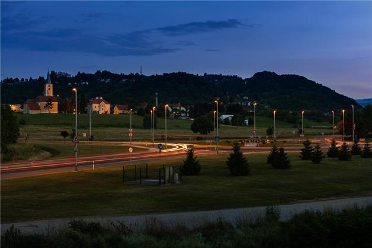

Projekti

Grad Zagreb proveo je rekonstrukciju javne rasvjete Zagrebačke avenije, koja predstavlja žilu kucavicu grada Zagreba u pogledu prometne opterećenosti. Kako je navedena avenija jako opterećena prometom, ista je klasificirana kao najviši razred rasvijetljenosti M1, sukladno važećoj normi HR EN 13201-2016.

Jedna od najljepših prometnica u gradu Zagrebu Krajem pretprošle godine završena je rekonstrukcija i dogradnja Radničke ceste uz podvožnjak.

Projekt modernizacije javne rasvjete Grada Sveta Nedelja uključuje zamjenu 495 postojećih i postavu 691 novih LED rasvjetih tijela u Svetoj Nedelji.
Modernizacija javne rasvjete izvodi se u svrhu poboljšanja kvalitete, tj. usklađivanja javne rasvjete s normiranim svjetlotehničkim parametrima definiranim normom HR EN 13201-2016.
Osim usklađivanja s navedenom normom, svrha projekta je smanjenje svjetlosnog onečišćenja i poboljšanje energetske učinkovitosti javne rasvjete.
Korištena je Philipsova ClearWay BGP307 svjetiljka sa System Ready modulom koji omogućava jednostavnu buduću nadogradnju svjetiljaka kako bi se integrirale u Interact City sustav bežičnog upravljanja.